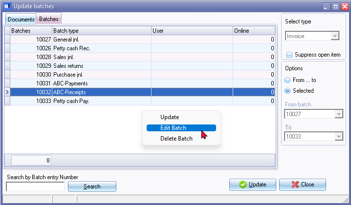
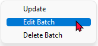

Post batch
Posting a batch is the final step in batch processing. To Post the transactions in a batch, will automatically update the ledger accounts, general ledger (with its control accounts) and the subsidiary ledgers (individual ledger accounts for the Debtors and Creditors) simultaneously.
|
|
Once the batches have been posted to the ledger, you need to create another transaction in another batch to correct any errors. Since your reports will be as accurate as the transactions entered into a batch type, when the batch type is posted (updated) to the ledger, it is recommended that you print a batch list and to check your transactions before posting the batches. |

Once transactions have been posted to the ledger, a trial balance can then be generated giving you a list of the accounts and the value of the transactions, as well as a profit / loss analysis. You may also print a wide range of reports for the posted transactions.
|
|
Before you start to post the batch, you need to balance the batch and check the descriptions of your balancing entries, You also need to change the alias for the batch, list the batch and check the entries if they are correct. |

The transaction data in unposted batches are not included in any ledger reports. You may check for any unposted batches and/or documents in the Input → Checking for unposted items menu on the Default ribbon. You may then decide to post the batches if you wish to include these transactions in your reports.
osFinancials displays the posted transactions in the 3-column ledger account format. You may also view the posted transactions in general ledger and the subsidiary ledgers (debtors and creditors ledger) in the traditional T-Account format using the T-Account viewer.
To post a batch to the ledger:
- Click on the F6:Post icon, to post (update) the batch to the ledger.
|
|
You may also right-click on the selected batch (journal) on the Batch type selection screen, and select the Post batch option on the context menu. |

|
|
Before you start to post the batch, you need to balance the batch and check the descriptions of your balancing entries, You also need to change the alias for the batch, list the batch and check the entries if they are correct. |
|
|
You may click on the F9:Process icon. You then need to select the Post batch from the list of batch processing options. |
- The transactions in the Batch entry Transaction screen will be posted (updated) to the selected accounts in the batch.
- Once the transactions are posted (updated) to the ledger, the Batch entry Transaction screen will automatically be closed and the Batch type selection screen will be displayed.
- Click on the Cancel button, or press the Esc key on your keyboard, to exit this screen.
Post to last year
- Transactions may however be posted to the previous financial year, after the year-end procedure is performed. Should the batch contain transactions with a date relating to the previous financial year, (for example, if the current financial year is from 01/03/2022 to 28/02/2023, and the date of the transaction is 10/02/2022), a confirmation message will be displayed.
"Do you want to continue posting? Batch contains transactions posting to last year!"
- Check that the date is correct - Last year's date.
- Click on the Yes button. osFinancials will post the transaction to the previous (last) financial year.
If the date(s) of the transactions is incorrect:
- Click on the No button.
- Correct the date(s) of the transaction in the batch to this year.
- Balance the batch once again.
- Post the Batch.
Error message : Batch does not balance
Should the batch not be in balance or if the batch is not balanced, an error message will be displayed.
"Batch is not in balance!"
To fix this:
- Click on the OK button.
- Balance the batch.
- Post the batch again.
Error message : Account disabled
You will not be allowed to post (update) the batch or document, if a selected the "Account disabled" field on the Accounting information tab for a debtor (customer / client) (Debtors on the Default ribbon) or a creditor (supplier / vendor) (Creditors on the Default ribbon) account is selected.
If the "Status" field of a ledger account is set to "Disabled" for a ledger account (Setup → Accounts) it will also not allow you to post (update) the batch or document to the ledger.
An error message will be displayed.
"This batch does not validate! Account disabled 000005 Mr. AB Green" (000005 Mr. AB Green is the account code and name of the debtor (customer / client) as per this example - creditor (supplier / vendor) accounts or ledger account)
This error may be caused by one of two reasons, i.e.
- The incorrect debtor (customer / client), creditor (supplier / vendor) or ledger account was selected.
- The "Account disabled" field is selected (ticked) on the Accounting information tab of the debtor (customer / client) or creditor (supplier / vendor) account. In the case of a ledger account, the "Status" field of a ledger account is set to "Disabled".
If you have selected an account in a Batch, and the account is disabled, osFinancials will display an error message when you post (update) the batch to the ledger:
- Take note of the account code and name. You may also check that you have not selected the incorrect account.
- Click on the OK button.
- If the incorrect account has been selected, select the correct account in the batch and continue to post the batch.
If the selected account was correct, you need to follow the following process:
- If it is a correct debtor (customer / client) or creditor (supplier / vendor) account, remove the tick in the "Account disabled" field on the Accounting information tab of the debtor (customer / client) or creditor (supplier / vendor) account. In the case of a ledger account, set the "Status" field to "Enabled".
- Access the Batch type, from which this error message was generated, and post the batch again.
|
|
It is also a good idea to make a backup before posting, in case there is any incorrect allocations in the batch. If there are, it is easy to restore your data from your backup and correct the allocations before updating the transactions to the ledger again. |
|
|
osFinancials 5 allows you to set the options or defaults for a batch to enable you to minimise errors and/or to maximise your productivity when you capture or enter transactions in a batch. The batch options or defaults only needs to be set once when you start to enter transactions for the first time, unless your requirements change. |
|
|
You need to post (update) Payments and Receipt batches before you can do the Bank reconciliation (Cash / Bank entry on the Default ribbon) (reconcile your Payments and Receipts journals with your Bank Statement). |
Post (update) transactions from the Update ledger (F3) option
This option is used to post (update) your batches to the ledger, which you have entered in Batch entry (Default ribbon) in the various batches. When these batches are updated to the ledger they will automatically pass the journals and post the transactions to the applicable accounts in the Ledger.
|
|
You may also post (update) these batches to the ledger from the following options:
|
Steps before updating / posting
- Balance the batch - If the debit and credit totals for the batch is not the same as displayed on the Batch type selection screen, you need to balance the batch. This will generate the balancing entries or transactions.
- List the batch - Generate or Print a list of the transactions in the Batch.
|
|
You need to check the transactions to see that they are correct. This is your last chance to correct any incorrect transactions. |
|
|
You may also need to attach the source documents to the Batch List for record and audit purposes. |
To post (update) batches to the ledger:
- On the Default ribbon, select Update ledger (F3). The "Update invoices" screen will be displayed.
- Click on the Batches tab. The "Update batches" screen will be displayed. Any of the available batches, for which you have entered transactions, will be listed:

|
|
Batch numbers is automatically generated. |
- Select the following options:
- Select type - This is only active for documents if you click on the Documents tab.
- Suppress open item - By default, the following Open item selection screens will be displayed on which you need to link the debit and credit transactions when updating batches:
- Open item selection screen for debtor (customer / client) accounts if the Use Open item field on the Accounting information tab is selected.
- Open item selection screen for creditor (supplier / vendor) accounts if the Use Open item field on the Accounting information tab is selected.
Select the Suppress open item field, if you do not wish to use the Open item link selection facilities when updating or posting batches. You may then later use the Open item link facility to link the transactions.
- From ... to - This will display the Batch numbers "From ... to". This option allows you to select the starting Batch number on a drop-down list, and a last Batch number which you need to post (update) to the ledger. All batches (journals) within the selected range of Batch numbers will be posted (updated) to the ledger.
|
|
If you only need to post (update) one batch (journal) to the ledger, the Batch number in the From... and To... fields must be the same. |
- Selected - If you select this option, the "From ... to" fields and the drop-down lists for Batch numbers will be de-activated. An arrow will indicate the selected document. You may also use the down arrow or Up arrow keys on your keyboard, to select a document from the list.
- Click on the Update button. osFinancials will automatically post (update) the transactions in the selected batches (journals) to the respective accounts in the General ledger, Debtor's ledger and/or Creditor's ledger.
Finding or locating specific batches
You may also use the following options to find or locate a specific batch or batches:
- Search by Batch entry number -
- Enter the Batch number - The Batch number will automatically be selected. If not, click on the Search button.
Sort sequences - Double-click on Column headings to sort the list of batches ascending or descending:
- Batch entry number - By default, all Batch numbers are displayed ascending (smallest Batch number to the latest Batch number).
If you double-click on this heading, it will list the Batch numbers in the descending sequence (from the latest Batch number to the smallest or first Batch number).
- Batch type - By default, the batches are listed by Batch numbers. The batch descriptions or names (as created or edited in Setup → Batch types) may not be displayed in the ascending sequence.
To display the batch descriptions or names in the descending sequence (9-0 / Z-A), double-click on this heading. To display the batch descriptions or names in the ascending sequence (0-9 / A-Z), double-click on this heading again.
- User - By default, the batches are listed by Batch numbers. The Users (as created in Setup → Access control and which were logged on to the system and which have processed any transactions in Batches / Journals) may not be displayed in the ascending sequence.
To display the Users in the descending sequence (9-0 / Z-A), double-click on this heading. To display the users in the ascending sequence (0-9 / A-Z), double-click on this heading again.
- Online - By default, the batches are listed by Batch numbers. The Online column will display TRUE or FALSE and may not be displayed in the ascending sequence.
To display the Online in the descending sequence (TRUE then FALSE), double-click on this heading. To display the users in the ascending sequence (FALSE then TRUE), double-click on this heading again.
Context menu options
If you select a batch on the list, you may right-click to launch the following context menu:

- Update - will post (update) the transactions in the selected batch (journal) to the ledger.
- Edit batch - will launch or open the selected batch entry screen. You may then edit the transactions in the batch, balance the batch, list the batch and change the alias, etc. before posting it to the ledger.
- Delete batch - When a batch (journal) is posted (updated) to the ledger, it is automatically removed from the list of batches.
|
|
It is recommended that this option not be used to delete a batch (journal), but that batches rather be deleted in the Erase batch batch processing option. |